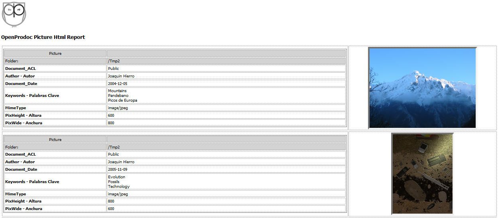

Informes OpenProdoc
1- Descripción General
El objetivo de la función de “Informes” es poder presentar o exportar metadatos de los documentos o carpetas de la forma deseada. Los informes cubren ambas funciones ya que dependiendo del formato de informe, podría generarse un documento html formateado para ser claro y legible o bien varios documentos XML o CSV preparados para ser procesados por otros sistemas.
Con la función de "Informes" function es posible obtener paginas HTML como:

El funcionamiento es el siguiente:
- Debe crearse un documento plantilla cuyo formato habitual sea texto (por ejemplo HTML, XML, CSV, TXT). Los “informes” que se generen tendrán la misma extensión/tipo mime que el documento plantilla. Es decir una plantilla con extensión html, generará documentos html que deben cumplir ese estándar en su estructura interna.
- El documento deberá seguir la sintaxis que se detalla posteriormente. Básicamente esa sintaxis implica la combinación de:
- Literales que se mostrarán tal cual se introducen,
- variables que representan metadatos y que serán sustituidos por el valor almacenado en el metadatos
- y elementos de control que repiten los elementos contenidos entre los límites para realizar bucles anidados sobre
- los registros de la lista
- y, para cada objeto, sobre todos sus metadatos.
- y, para cada metadato, sobre todos sus valores.
- Las plantillas no son específicas de un tipo documental o carpeta, pueden aplicarse a varios tipos. Dependiendo de que se introduzca nombres de metadatos concretos o que se defina un bucle para todos los metadatos, el informe podrá aplicarse a un tipo documental, un tipo y todos sus subtipos o será válido para todos los tipos de objetos (incluso tanto carpetas como documentos).
- Una vez creado la plantilla, deberá almacenarse en OpenProdoc, preferiblemente en la carpeta “/System” (donde ya se incluyen algunos ejemplos) como tipo documental PD_REPORT.
- Ese tipo documental incluye 2 metadatos adicionales, el “número de documentos por página” y el “número de páginas por archivo”. La función de informes volcará la “cabecera del informe” (elementos contenidos entre el principio del documento y el inicio del bucle de registros), luego repetirá la zona del bucle de registros tantas veces como “documentos por página” se definan, luego volcará el pie del informe (elementos contenidos entre el final del bucle de registros y el final del documento) y luego volverá a iniciar otra “página” con el mismo procedimiento. Cuando se hayan volcado “número de páginas por archivo”, se cerrará el archivo y se creará otro nuevo, y así sucesivamente hasta que se hayan volcado todos los registros de la lista. Se muestran luego algunos ejemplos.
- Con la plantilla creada y almacenada en OpenProdoc, puede accederse a las funciones de Informes desde varios puntos:
- Menú de Carpetas
- Menú de Documentos
- Resultados de Búsqueda de Carpetas
- Resultados de Búsqueda de Documentos
- Al solicitar la generación de informes, se presentará un formulario con una lista con los informes disponibles (siempre teniendo en cuenta los permisos del usuario, que podrá acceder a los informes de acuerdo a su permisos (ACL). Podrá elegirse el informe deseado y variarse (solo en cliente Swing) los parámetros de generación del informe (registros/página y páginas/archivo).
- En cada punto, la función de informes recibirá una lista de elementos para generar el informe (siempre teniendo en cuenta los permisos de acceso del usuario). En cada caso las listas utilizadas son:
- Menú de Carpetas: La lista contiene todas las carpetas contenidas en la carpeta actual.
- Menú de Documentos: La lista contiene todos los documentos contenidos en la carpeta actual.
- Resultados de Búsqueda de Carpetas: La lista contiene todas las carpetas recuperadas en la consulta.
- Resultados de Búsqueda de Documentos: La lista contiene todos los documentos recuperados en la consulta.
- Al solicitar la generación se compondrá el informe y se devolverá una referencia al resultado o resultados. Si se han generado varios archivos con informes, en el cliente Web se devolverá un archivo comprimido con todos los archivos.

2- Sintaxis
La sintaxis de OPD es la siguiente:
- Si la línea empieza por el carácter “#”, se considera un comentario y se ignora totalmente el contenido de esa línea.
- Antes de evaluar la línea se eliminan los espacios finales.
- Si la línea empieza por el carácter “+”, el contenido de esta línea se suma a la línea anterior, tras evaluarse de acuerdo a la regla siguiente quitando el carácter “+”, en otro caso, se vuelca en una nueva línea, tras evaluarse de acuerdo a la regla siguiente.
- Si empieza por “@OPD”, se evalúa la línea como una “palabra reservada” dentro de la lista que se muestra a continuación, en otro caso se considera un literal que se volcará al archivo destino.
- La lista de palabras reservadas es:
- @OPD_DOCSLOOP_S: Inicio de bucle de registros. Todo el contenido entre el inicio y el fin (@OPD_DOCSLOOP_E) del bucle de registros se repetirá para todos los objetos de la lista, sean literales o palabras reservadas. A continuación puede aparecer el carácter “-“ seguido de una lista de nombres de tipos de documentos o carpetas separados por el carácter “,” (Ej. “@OPD_DOCSLOOP_S – DocsIdentidad, Pasaporte”). Los objetos de ese tipo incluidos en la lista se ignorarán y no serán volcados en el informe ni se repetirá el bucle para ellos.
- @OPD_DOCSLOOP_E: Fin de bucle de registros
- @OPD_ATTRLOOP_S: Inicio de bucle de metadatos. Todo el contenido entre el inicio y el fin (@OPD_ATTRLOOP_E) del bucle de metadatos se repetirá para todos los metadatos/atributos de cada documento/carpeta, sean literales o palabras reservadas. A continuación puede aparecer el carácter “-“ seguido de una lista de nombres de metadatos separados por el carácter “,” (Ej. “@OPD_ATTRLOOP_S – PDId, LockedBy, ParentId”). Los metadatos incluidos en la lista se ignorarán y no serán volcados en el informe ni se repetirá el bucle para ellos. A continuación de @OPD_ATTRLOOP_S y antes de “-“ puede incluirse 2 operadores: “*” y “?”. El operador “*”(Ej. “@OPD_ATTRLOOP_S*”) indica que debe recuperarse todos los metadatos del documento o carpeta, no solo los obtenidos en la búsqueda y devueltos en la lista. Esto puede producirse si por ejemplo se busca documentos de un tipo documental Y sus subtipos. En ese caso por defecto solo se devuelven los metadatos del tipo documental padre, de forma que la estructura sea homogénea. El operador “?” indica que NO debe incluirse en el bucle de metadatos los metadatos vacios.
- @OPD_ATTRLOOP_E: Fin de bucle de metadatos
- @OPD_VALLOOP_S: Inicio de bucle de Valores (para atributos multivaluados). Todo el contenido entre el inicio y el fin (@OPD_VALLOOP_E) del bucle de valores se repetirá para todos los valores de un metadato, sean literales o palabras reservadas.
- @OPD_VALLOOP_E: Fin de bucle de Valores (para atributos multivaluados)
- @OPD_GLOBPARENT: Se sustituirá por el camino completo de la carpeta contenedora sobre la que se inició la búsqueda o listado de elementos de una carpeta (ej. “/Expedientes”)
- @OPD_PARENT: Se sustituirá por el camino completo de la carpeta contenedora del documento o carpeta actual dentro de la lista de resultados (ej. “/Expedientes/S-12345/Solicitud”, “/Expedientes/Z-67896/Aprobados”). Esta variable podrá ser diferente en cada elemento si el informe se genera tras una búsqueda (que puede localizar elementos a distintos niveles) y será igual si se muestra los elementos contenidos en una carpeta.
- @OPD_NAME_ATTR: Muestra el nombre interno/técnico de un atributo dentro del bucle de atributos. Puede expresarse como @OPD_NAME_ATTR_* o como @OPD_NAME_ATTR_NombreInternoAtributo (Ej. OPD_NAME_ATTR_TITLE). Puede seguido de “:” y un número entero, que indica la longitud que tendrá el texto. Si el valor es menor, se truncará, en otro caso se completará a espacios. (Ej. @OPD_NAME_ATTR _*:20).
- @OPD_UNAME_ATTR: Muestra el nombre de usuario de un atributo dentro del bucle de atributos. Puede expresarse como @OPD_UNAME_ATTR_* o como @OPD_UNAME_ATTR_NombreInternoAtributo (Ej. OPD_UNAME_ATTR_TITLE). Puede seguido de “:” y un número entero, que indica la longitud que tendrá el texto. Si el valor es menor, se truncará, en otro caso se completará a espacios. (Ej. @OPD_UNAME_ATTR _*:20).
- @OPD_VAL_ATTR: Valor del atributo. Puede expresarse como @OPD_VAL_ATTR_* o como @OPD_VAL_ATTR_NombreInternoAtributo (Ej. @OPD_VAL_ATTR_TITLE). En el primer caso, podrá utilizarse en un bucle para volcar todos los valores, para cualquier tipo de Documento o carpeta. Puede seguido de “:” y un número entero, que indica la longitud que tendrá el texto. Si el valor es menor, se truncará, en otro caso se completará a espacios. (Ej. @OPD_VAL_ATTR_*:20).
- @OPD_REF_ATTR: Valor o referencia del atributo. El comportamiento y sintaxis es igual que en el caso de @OPD_VAL_ATTR, pero si el tipo de variable es tesauro, referencia a un tipo mime o a la carpeta contenedora, en lugar de mostrar el valor de la variable (identificador del término, ej: “12e434_43af43”) mostrará el valor del término referenciado (Ej: “Portugal”).
- @OPD_RECCOUNT: Número de registros volcados en el informe hasta el momento.
- @OPD_PAGCOUNT: Número de páginas volcadas en el informe hasta el momento.
Ejemplos:
Suponiendo dos tipos documentales (simplificados por claridad) con los metadatos (Entre paréntesis el "nombre de usuario" de metadato):
PD_DOCS
- PDId (PDId)
- Title (Document_Title)
- DocDate (Document_Date)
Informe (subtipo de PD_DOCS):
- PDId (PDId)
- Title (Document_Title)
- DocDate (Document_Date)
- Autor (Nombre Autor)
- Keywords (Palabras Clave)
Y una lista de resultados:
PD_DOCS:
- PDId=1001
- Title="Documento 1"
- DocDate=2015/02/15
PD_DOCS:
- PDId=1002
- Title="Documento 2"
- DocDate=
Informe:
- PDId=1003
- Title="Documento 3"
- DocDate=2001/04/25
- Autor="John Smith"
- Keywords="Economía", "Documentación"
Esta plantilla:
# Ejemplo de Documento. Comentario que no se mostrará
================================================================================
Contenido de carpeta:
+@OPD_GLOBPARENT
# Inicio Bucle documentos
@OPD_DOCSLOOP_S
Doc:
+@OPD_RECCOUNT
--------------------------------------------------------------------------------
Identificador=
+@OPD_REF_ATTR_PDID
@OPD_UNAME_ATTR_TITLE
+=
+@OPD_REF_ATTR_TITLE
@OPD_UNAME_ATTR_DocDate
+=
+@OPD_REF_ATTR_DocDate
--------------------------------------------------------------------------------
# Fin Bucle documentos
@OPD_DOCSLOOP_E
Total Docs=
+@OPD_RECCOUNT
+ Página:
+@OPD_PAGCOUNT
================================================================================
Generará este Informe:
================================================================================
Contenido de carpeta:/Report Test
Doc:1
--------------------------------------------------------------------------------
Identificador=1001
Document_Title=Documento 1
Document_Date=2015-02-15
--------------------------------------------------------------------------------
Doc:2
--------------------------------------------------------------------------------
Identificador=1002
Document_Title=Documento 2
Document_Date=
--------------------------------------------------------------------------------
Doc:3
--------------------------------------------------------------------------------
Identificador=1003
Document_Title=Documento 3
Document_Date=2001-04-25
--------------------------------------------------------------------------------
Total Docs=3 Página:1
================================================================================
Ver: Búsqueda de Carpetas y Búsqueda de Documentos
Help Index OpenProdoc